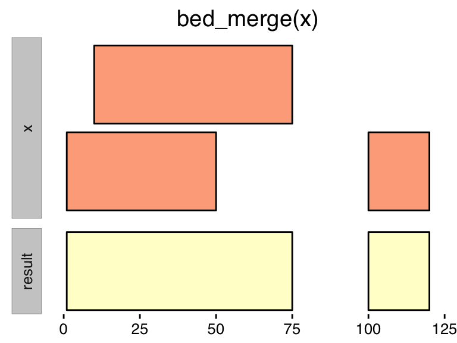
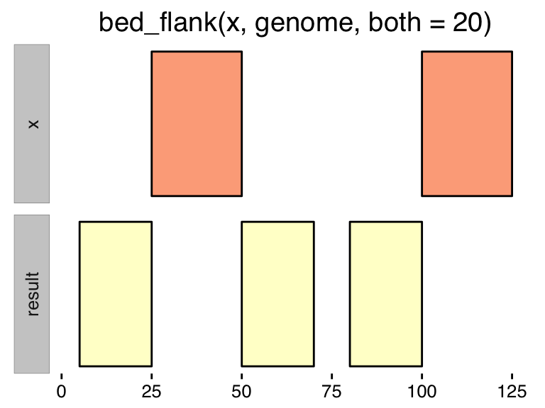
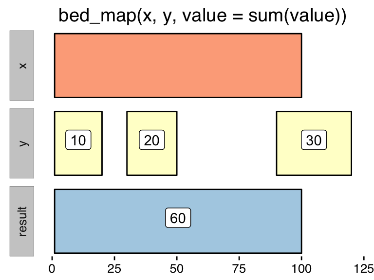
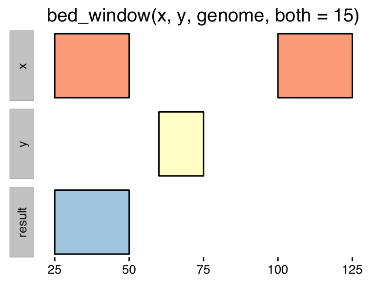
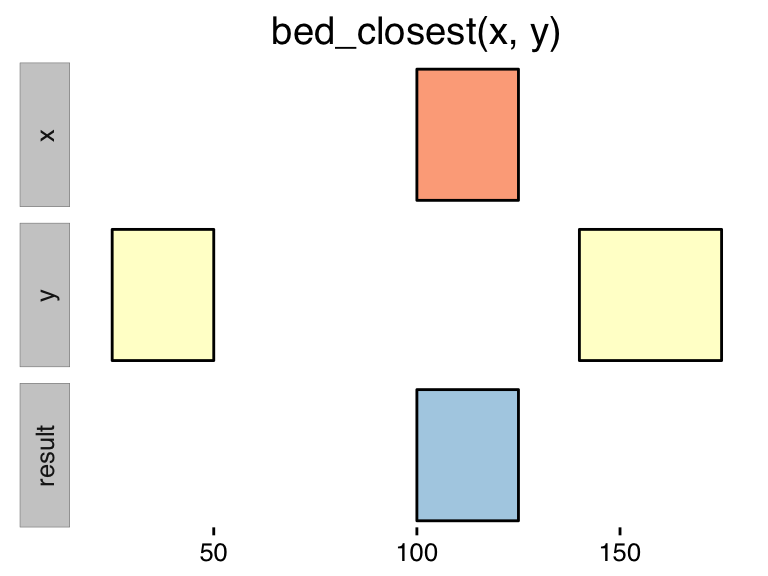

Reading data
valr has several methods to read interval data. These methods:
- Take local files or URLs as input.
- Return a
data.frameintibble::tbl_dfformat. - Assign consistent
chrom,startandendcolumn names. - Use
readrfor speed. - Coerce column types.
The methods include:
read_bed(): read a BED3+ fileread_bed12(): read a BED12 fileread_bedgraph(): read a bedGraph fileread_genome(): read a UCSC “chrom size” fileread_vcf(): read the Variant Call Formatread_narrowpeak(): read narrowPeak filesread_broadpeak(): read broadPeak files
BED files
read_bed(valr_example('3fields.bed.gz'))
#> # A tibble: 10 × 3
#> chrom start end
#> <chr> <int> <int>
#> 1 chr1 11873 14409
#> 2 chr1 14361 19759
#> 3 chr1 14406 29370
#> 4 chr1 34610 36081
#> 5 chr1 69090 70008
#> 6 chr1 134772 140566
#> 7 chr1 321083 321115
#> 8 chr1 321145 321207
#> 9 chr1 322036 326938
#> 10 chr1 327545 328439
read_bed(n_fields = 6, valr_example('6fields.bed.gz'))
#> # A tibble: 10 × 6
#> chrom start end name score strand
#> <chr> <int> <int> <chr> <chr> <chr>
#> 1 chr1 11873 14409 DDX11L1 3 +
#> 2 chr1 14361 19759 WASH7P 10 -
#> 3 chr1 14406 29370 WASH7P 7 -
#> 4 chr1 34610 36081 FAM138F 3 -
#> 5 chr1 69090 70008 OR4F5 1 +
#> 6 chr1 134772 140566 LOC729737 3 -
#> 7 chr1 321083 321115 DQ597235 1 +
#> 8 chr1 321145 321207 DQ599768 1 +
#> 9 chr1 322036 326938 LOC100133331 3 +
#> 10 chr1 327545 328439 LOC388312 1 +
read_bed12(valr_example('12fields.bed.gz'))
#> # A tibble: 3 × 12
#> chrom start end name score strand cds_start cds_end item_rgb
#> <chr> <int> <int> <chr> <chr> <chr> <int> <int> <chr>
#> 1 chr1 4797973 4836816 testgene 1 + 4797973 4836816 .
#> 2 chr10 4848118 4880877 diffchrom 1 + 4848118 4880877 .
#> 3 chr20 5073253 5152630 negstrand 1 - 5073253 5152630 .
#> # ... with 3 more variables: exon_count <int>, exon_sizes <chr>,
#> # exon_starts <chr>Genome files
genome_human <- read_genome(valr_example('hg19.chrom.sizes.gz'))bedGraph files
read_bedgraph(valr_example('test.bg.gz'))
#> # A tibble: 4 × 4
#> chrom start end value
#> <chr> <int> <int> <dbl>
#> 1 chr19 49302000 49302300 -1.00
#> 2 chr19 49302300 49302600 -0.75
#> 3 chr19 49302600 49302900 -0.50
#> 4 chr19 49302900 49303200 -0.25VCF files
read_vcf() reads VCF files and assigns chrom, start and end columns to be used to downstream interval comparisons. Note the interval size is calculated as the length of the REF field in the original file.
read_vcf(valr_example('test.vcf.gz'))
#> # A tibble: 11 × 18
#> CHROM POS ID REF ALT QUAL FILTER
#> <chr> <int> <chr> <chr> <chr> <int> <chr>
#> 1 1 10 1:10 A T 100 PASS
#> 2 1 20 1:20 G C 100 PASS
#> 3 1 30 1:30 C A 100 PASS
#> 4 1 40 1:40 A C 100 PASS
#> 5 1 10000 1:10000 G C 100 PASS
#> 6 1 20000 1:20000 T A 100 PASS
#> 7 4 5000 4:5000 A T 100 PASS
#> 8 4 6000 4:6000 C T 100 PASS
#> 9 X 800 X:800 A C 100 PASS
#> 10 X 900 X:900 A T 100 PASS
#> 11 X 1000 X:1000 T G 100 PASS
#> # ... with 11 more variables: INFO <chr>, FORMAT <chr>, X1 <chr>,
#> # X2 <chr>, X3 <chr>, X4 <chr>, X5 <chr>, X6 <chr>, chrom <chr>,
#> # start <int>, end <int>Interval manipulations
valr implements several methods for manipulating sets of intervals. Some methods operate on a single set of intervals, while others compare two sets of intervals.
Many methods the same name as the corresponding BEDtool, and some commonly used BEDtools are implemented as dplyr pipes (e.g., see the group_by section).
All methods accept one or more sets of x and y intervals, which must either be created using the read methods, or have chrom, start and end columns.
Single set operations
These methods operate on a single set of intervals:
bed_sort(): order intervalsbed_cluster(): Cluster (but don’t merge) overlapping/nearby intervals.bed_complement(): extract intervals not represented by an interval file.bed_merge(): combine overlapping and nearby intervals into a single interval.bed_flank(): Generate new flanking intervalsbed_slop(): Expand the size of input intervalsbed_shift(): Shift the coordinates of an input set, bounded by a genome
Sort
bed_sort orders intervals based on a specification. is_sorted asks whether a tbl is already sorted.
x <- bed_random(genome_human)
is_sorted(x)
#> [1] FALSE
y <- bed_sort(x)
y
#> # A tibble: 1,000,000 × 3
#> chrom start end
#> <chr> <int> <int>
#> 1 chr1 2679 3679
#> 2 chr1 8089 9089
#> 3 chr1 15343 16343
#> 4 chr1 15488 16488
#> 5 chr1 16445 17445
#> 6 chr1 20050 21050
#> 7 chr1 27278 28278
#> 8 chr1 27335 28335
#> 9 chr1 28448 29448
#> 10 chr1 33302 34302
#> # ... with 999,990 more rows
is_sorted(y)
#> [1] TRUECluster
bed_cluster identifies clustered intervals based on a distance specification and assigns them a unique .id.

x <- bed_random(genome_human)
y <- bed_cluster(x, max_dist = 1000)
y
#> # A tibble: 1,000,000 × 4
#> chrom start end .id
#> <chr> <int> <int> <int>
#> 1 chr18 49965814 49966814 16067
#> 2 chr19 39513438 39514438 12675
#> 3 chr4 118156969 118157969 38093
#> 4 chr2 43164805 43165805 13944
#> 5 chr9 68309338 68310338 21869
#> 6 chr3 121558721 121559721 39189
#> 7 chr15 5411102 5412102 1706
#> 8 chr3 127144472 127145472 41076
#> 9 chr6 58881176 58882176 19193
#> 10 chr4 29353598 29354598 9427
#> # ... with 999,990 more rowsComplement
bed_complement identifies intervals in a genome that are not covered by an input.

x <- bed_random(genome_human)
bed_complement(x, genome_human)
#> # A tibble: 723,531 × 3
#> chrom start end
#> <chr> <dbl> <int>
#> 1 chr1 1 2947
#> 2 chr1 3947 7065
#> 3 chr1 8065 8330
#> 4 chr1 9330 9604
#> 5 chr1 10604 11456
#> 6 chr1 12456 13167
#> 7 chr1 14229 14543
#> 8 chr1 16266 20375
#> 9 chr1 21375 22472
#> 10 chr1 23472 23571
#> # ... with 723,521 more rowsMerge
bed_merge identifies overlapping intervals and reports new merged ones. is_merged asks whether a tbl is already merged. Values from merged intervals can be reported using name / value pairs.

n <- 1e6
x <- bed_random(genome_human, n = n)
is_merged(x)
#> [1] FALSE
# add some signal
x <- x %>% mutate(signal = runif(n))
bed_merge(x, maxs = max(signal))
#> # A tibble: 723,330 × 4
#> chrom start end signal
#> <chr> <int> <int> <chr>
#> 1 chr1 4760 5760 .
#> 2 chr1 7992 8992 .
#> 3 chr1 13501 14501 .
#> 4 chr1 20925 22369 .
#> 5 chr1 24051 25051 .
#> 6 chr1 27837 29797 .
#> 7 chr1 38058 39058 .
#> 8 chr1 41336 43251 .
#> 9 chr1 47192 48192 .
#> 10 chr1 48234 49622 .
#> # ... with 723,320 more rowsFlank
bed_flank creates new intervals that flank – but do not contain – the input intervals.

bed_flank(x, genome_human, both = 100)
#> # A tibble: 2 × 3
#> chrom start end
#> <chr> <dbl> <dbl>
#> 1 chr1 50 150
#> 2 chr1 125 225Slop
bed_slop pads input intervals based on a specification

bed_slop(x, genome_human, both = 100)
#> # A tibble: 2 × 3
#> chrom start end
#> <chr> <dbl> <dbl>
#> 1 chr1 10 220
#> 2 chr1 125 335Shift
bed_shift adjusts coordinates toward start or end by a defined size. Intervals created out of bounds are removed, or trimmed.

bed_shift(x, genome_human, size = 100)
#> # A tibble: 2 × 3
#> chrom start end
#> <chr> <dbl> <dbl>
#> 1 chr1 125 150
#> 2 chr1 200 225Interval spacing
Interval spacing is easily computed using dplyr. Overlapping intervals must first be merged. Spacing for the first interval of each chromosome is undefined.
x <- bed_random(genome_human)
x <- bed_merge(x)
x %>%
group_by(chrom) %>%
mutate(.spacing = start - lag(end))
#> Source: local data frame [723,608 x 4]
#> Groups: chrom [25]
#>
#> chrom start end .spacing
#> <chr> <int> <int> <int>
#> 1 chr1 82 1532 NA
#> 2 chr1 2900 3900 1368
#> 3 chr1 5190 6190 1290
#> 4 chr1 11286 12286 5096
#> 5 chr1 26937 27937 14651
#> 6 chr1 38301 40049 10364
#> 7 chr1 40058 41058 9
#> 8 chr1 41079 42079 21
#> 9 chr1 48598 50363 6519
#> 10 chr1 53252 54950 2889
#> # ... with 723,598 more rowsMultiple set operations
These methods compare two sets of intervals:
bed_intersect(): find overlapping intervalsbed_map(): apply a function to selected columns for overlapping intervalsbed_subtract(): Remove intervals based on overlaps between two filesbed_window(): Find overlapping intervals within a windowbed_closest(): find the closest intervals independent of overlaps
Intersection
bed_intersect() is implemented using an interval tree in Rcpp. Column names in the result have .x and .y suffixes, and an .overlap column contains the size of the intersection (values of 0 indicate book-ended, or touching intervals). See the benchmarks section for timing. Though bed_intersect is pretty fast already, we intend to further improve upon this by parallization with RcppParallel.

# intersect two sets of 1e6 intervals from hg19
x <- bed_random(genome_human)
y <- bed_random(genome_human)
bed_intersect(x, y)
#> # A tibble: 646,891 × 6
#> chrom start.x end.x start.y end.y .overlap
#> <chr> <int> <int> <int> <int> <int>
#> 1 chr1 9651 10651 8783 9783 132
#> 2 chr1 9651 10651 9135 10135 484
#> 3 chr1 11227 12227 10714 11714 487
#> 4 chr1 11534 12534 10714 11714 180
#> 5 chr1 25225 26225 25436 26436 789
#> 6 chr1 65186 66186 65242 66242 944
#> 7 chr1 77788 78788 78626 79626 162
#> 8 chr1 82050 83050 81075 82075 25
#> 9 chr1 82050 83050 82540 83540 510
#> 10 chr1 82050 83050 82797 83797 253
#> # ... with 646,881 more rows
# A records with no overlaps (i.e., `-v`)
bed_intersect(x, y, invert = TRUE)
#> # A tibble: 524,524 × 3
#> chrom start end
#> <chr> <int> <int>
#> 1 chrY 59372336 59373336
#> 2 chrY 59360692 59361692
#> 3 chrY 59353958 59354958
#> 4 chrY 59349246 59350246
#> 5 chrY 59343516 59344516
#> 6 chrY 59321428 59322428
#> 7 chrY 59301707 59302707
#> 8 chrY 59293210 59294210
#> 9 chrY 59289511 59290511
#> 10 chrY 59287860 59288860
#> # ... with 524,514 more rowsOne can achieve behaviour similar to BEDtools by combining bed_intersect with dplyr tools.
# `x` records with overlaps (i.e., `-wa`)
bed_intersect(x, y) %>% select(chrom, start = start.x, end = end.x)
#> # A tibble: 646,891 × 3
#> chrom start end
#> <chr> <int> <int>
#> 1 chr1 9651 10651
#> 2 chr1 9651 10651
#> 3 chr1 11227 12227
#> 4 chr1 11534 12534
#> 5 chr1 25225 26225
#> 6 chr1 65186 66186
#> 7 chr1 77788 78788
#> 8 chr1 82050 83050
#> 9 chr1 82050 83050
#> 10 chr1 82050 83050
#> # ... with 646,881 more rows
# `y` records with overlaps (i.e., `-wb`)
bed_intersect(x, y) %>% select(chrom, start = start.y, end = end.y)
#> # A tibble: 646,891 × 3
#> chrom start end
#> <chr> <int> <int>
#> 1 chr1 8783 9783
#> 2 chr1 9135 10135
#> 3 chr1 10714 11714
#> 4 chr1 10714 11714
#> 5 chr1 25436 26436
#> 6 chr1 65242 66242
#> 7 chr1 78626 79626
#> 8 chr1 81075 82075
#> 9 chr1 82540 83540
#> 10 chr1 82797 83797
#> # ... with 646,881 more rows
# Unique records in `x` (i.e., `-u`)
bed_intersect(x, y) %>% select(chrom, start = start.x, end = end.x) %>% unique()
#> # A tibble: 475,397 × 3
#> chrom start end
#> <chr> <int> <int>
#> 1 chr1 9651 10651
#> 2 chr1 11227 12227
#> 3 chr1 11534 12534
#> 4 chr1 25225 26225
#> 5 chr1 65186 66186
#> 6 chr1 77788 78788
#> 7 chr1 82050 83050
#> 8 chr1 82127 83127
#> 9 chr1 88370 89370
#> 10 chr1 93351 94351
#> # ... with 475,387 more rows
# Count `y` intervals that intersect each `x` interval
bed_intersect(x, y) %>% group_by(chrom, start.x, end.x) %>% summarize(count = n())
#> Source: local data frame [475,397 x 4]
#> Groups: chrom, start.x [?]
#>
#> chrom start.x end.x count
#> <chr> <int> <int> <int>
#> 1 chr1 9651 10651 2
#> 2 chr1 11227 12227 1
#> 3 chr1 11534 12534 1
#> 4 chr1 25225 26225 1
#> 5 chr1 65186 66186 1
#> 6 chr1 77788 78788 1
#> 7 chr1 82050 83050 3
#> 8 chr1 82127 83127 2
#> 9 chr1 88370 89370 1
#> 10 chr1 93351 94351 2
#> # ... with 475,387 more rowsMap
bed_map maps signals onto intervals. Summary statistics for mapped signals can be specific using NSE with name / value pairs.

bedfile <- valr_example('genes.hg19.chr22.bed.gz')
bgfile <- valr_example('hela.h3k4.chip.bg.gz')
x <- read_bed(bedfile, n_fields = 6)
y <- read_bedgraph(bgfile)
bed_map(x, y, means = mean(value), sds = sd(value))
#> # A tibble: 730 × 8
#> chrom start end means sds name score strand
#> <chr> <int> <int> <dbl> <dbl> <chr> <chr> <chr>
#> 1 chr22 16150259 16193004 7.914286 7.570731 <NA> <NA> <NA>
#> 2 chr22 16162065 16172265 1.000000 NA <NA> <NA> <NA>
#> 3 chr22 16179617 16181004 NA NA BC017398 1 -
#> 4 chr22 16239287 16239327 NA NA DQ590589 1 +
#> 5 chr22 16240245 16240277 NA NA DQ573684 1 -
#> 6 chr22 16240300 16240340 NA NA DQ595048 1 -
#> 7 chr22 16241085 16241125 NA NA DQ590589 1 +
#> 8 chr22 16242753 16242785 NA NA DQ573684 1 -
#> 9 chr22 16243382 16243414 NA NA DQ573684 1 -
#> 10 chr22 16243447 16243487 NA NA DQ587539 1 -
#> # ... with 720 more rowsSubtract
bed_substract() removes x intervals that intersect with y.

x <- bed_random(genome_human)
y <- bed_random(genome_human)
bed_subtract(x, y)
#> # A tibble: 957,774 × 3
#> chrom start end
#> <chr> <int> <int>
#> 1 chr1 649 1649
#> 2 chr1 1422 2277
#> 3 chr1 6733 6911
#> 4 chr1 13112 13802
#> 5 chr1 13112 13197
#> 6 chr1 15015 16015
#> 7 chr1 17319 18319
#> 8 chr1 19403 19520
#> 9 chr1 23292 24084
#> 10 chr1 30952 31337
#> # ... with 957,764 more rowsWindow
bed_window() identifies y intervals that intersect an expanded window of x intervals.

x <- bed_random(genome_human, n = 100)
y <- bed_random(genome_human, n = 100)
# a few intersections
bed_intersect(x, y)
#> # A tibble: 0 × 6
#> # ... with 6 variables: chrom <chr>, start.x <int>, end.x <int>,
#> # start.y <int>, end.y <int>, .overlap <int>
# can be expanded by casting a wider net
bed_window(x, y, genome, both = 1e6)
#> # A tibble: 0 × 6
#> # ... with 6 variables: chrom <chr>, start.x <int>, end.x <int>,
#> # start.y <int>, end.y <int>, .overlap <int>Closest
bed_closest() identifies y intervals that are closest to x.

x <- bed_random(genome_human, n = 100)
y <- bed_random(genome_human, n = 100)
bed_closest(x, y)
#> # A tibble: 100 × 7
#> chrom start.x end.x start.y end.y .overlap .distance
#> <chr> <int> <int> <int> <int> <int> <int>
#> 1 chr1 24475359 24476359 21977789 21978789 0 -2496570
#> 2 chr1 84958397 84959397 70368954 70369954 0 -14588443
#> 3 chr1 90561878 90562878 70368954 70369954 0 -20191924
#> 4 chr1 149230830 149231830 140176126 140177126 0 -9053704
#> 5 chr1 193230588 193231588 169372011 169373011 0 -23857577
#> 6 chr1 208083506 208084506 219939414 219940414 0 11854908
#> 7 chr1 213265325 213266325 219939414 219940414 0 6673089
#> 8 chr10 2424084 2425084 83069014 83070014 0 80643930
#> 9 chr10 45658835 45659835 83069014 83070014 0 37409179
#> 10 chr10 55645210 55646210 83069014 83070014 0 27422804
#> # ... with 90 more rowsRandomzing intervals
valr provides methods for creating new random intervals or permutations of existing intervals:
bed_randomgenerates random intervals from an inputgenome.bed_shuffleshuffles coordinates given a set of input intervals.- Random sampling of input intervals is done with
dplyr.
Random
bed_random generates random intervals from an input genome. The numbers of intervals from each chrom are proporitional to each chrom size.
x <- bed_random(genome_human, n = 1e6, length = 1e3)
x
#> # A tibble: 1,000,000 × 3
#> chrom start end
#> <chr> <int> <int>
#> 1 chr6 6170375 6171375
#> 2 chr10 54164368 54165368
#> 3 chr1 94459593 94460593
#> 4 chr18 51008215 51009215
#> 5 chr12 68610889 68611889
#> 6 chr5 47492784 47493784
#> 7 chr9 52580689 52581689
#> 8 chr4 135985440 135986440
#> 9 chr8 122604043 122605043
#> 10 chr9 43990705 43991705
#> # ... with 999,990 more rows
# numbers of sampled intervals are proportional to chrom size
group_by(x, chrom) %>% summarize(n = n()) %>% arrange(desc(n))
#> # A tibble: 25 × 2
#> chrom n
#> <chr> <int>
#> 1 chr1 80878
#> 2 chr2 78292
#> 3 chr3 64412
#> 4 chr4 61793
#> 5 chr5 58318
#> 6 chr6 54785
#> 7 chr7 51521
#> 8 chrX 50559
#> 9 chr8 47523
#> 10 chr9 45468
#> # ... with 15 more rowsSample
Sampling can be done using dplyr:
x <- bed_random(genome_human)
# sample by number
sample_n(x, 1e3, replace = FALSE)
#> # A tibble: 1,000 × 3
#> chrom start end
#> <chr> <int> <int>
#> 1 chr20 25728237 25729237
#> 2 chr6 58631070 58632070
#> 3 chr2 107287561 107288561
#> 4 chr2 224102717 224103717
#> 5 chr3 83817215 83818215
#> 6 chr5 15046194 15047194
#> 7 chr10 135250099 135251099
#> 8 chr10 56744277 56745277
#> 9 chr10 107427061 107428061
#> 10 chrX 19568360 19569360
#> # ... with 990 more rows
# or fraction
sample_frac(x, 0.1, replace = FALSE)
#> # A tibble: 100,000 × 3
#> chrom start end
#> <chr> <int> <int>
#> 1 chr9 86446702 86447702
#> 2 chr3 5866962 5867962
#> 3 chr15 28494191 28495191
#> 4 chr12 11224327 11225327
#> 5 chr9 46822533 46823533
#> 6 chr7 97321979 97322979
#> 7 chr2 213441386 213442386
#> 8 chr4 9403978 9404978
#> 9 chr17 76567129 76568129
#> 10 chr8 80425381 80426381
#> # ... with 99,990 more rows
# or sample intervals within groups
group_by(x, chrom) %>% sample_n(1)
#> Source: local data frame [25 x 3]
#> Groups: chrom [25]
#>
#> chrom start end
#> <chr> <int> <int>
#> 1 chr1 46965618 46966618
#> 2 chr10 123452374 123453374
#> 3 chr11 119561897 119562897
#> 4 chr12 30895141 30896141
#> 5 chr13 39678536 39679536
#> 6 chr14 103055496 103056496
#> 7 chr15 90674809 90675809
#> 8 chr16 49068848 49069848
#> 9 chr17 45828075 45829075
#> 10 chr18 73308672 73309672
#> # ... with 15 more rowsShuffle
bed_shuffle shuffles input intervals. Interval sizes are equal in the input and output.
#> Warning in bind_rows_(x, .id): binding factor and character vector,
#> coercing into character vector
y <- bed_shuffle(x, genome_human)
y
#> # A tibble: 2 × 3
#> chrom start end
#> <fctr> <int> <int>
#> 1 chr7 27007370 27007390
#> 2 chr18 36834633 36834643
any(x$start == y$start)
#> [1] FALSE
all(x$end - x$start == y$end - y$start)
#> [1] TRUEOther topics
Interval Statistics
valr provides several methods to assess statistical properties of interval sets including:
bed_fisher(): measure overlap significance of two sets of intervals.bed_absdist(): quantify absolute distance between query intervals and closest reference intervalsbed_reldist(): quantify relative distances between query intervals and closest reference intervalsbed_jaccard(): quantify extent of overlap between two sets of intervals
Several of these methods were described in the Genometricorr software package.
Fisher’s test
The Fisher’s test assesses whether two sets of intervals are drawn from the same background genome.
x <- bed_random(genome_human)
y <- bed_random(genome_human)
bed_fisher(x, y, genome_human)
#> estimate p.value conf.low conf.high method
#> 1 2.346882 0 2.332876 2.360909 Fisher's Exact Test for Count Data
#> alternative
#> 1 two.sidedAbsolute distance
bed_absdist() computes the absolute distance between the midpoint of query intervals and the closest midpoints of a set of reference intervals. Absolute distances are scaled by the inter-reference gap for the chromosome as follows. For Q total query points and R reference points on a chromosome, scale the distance for each query point i to the closest reference point by the inter-reference gap for each chromosome.
\[ d_i(x,y) = min_{\substack{k}}(|q_i - r_k|)\frac{R}{Length\ of\ chromsome} \]
By default both absolute and scaled distances are reported as absdist and scaled_absdist respectively.
x <- bed_random(genome_human)
y <- bed_random(genome_human)
bed_absdist(x, y, genome_human)
#> # A tibble: 1,000,000 × 5
#> chrom start end absdist scaled_absdist
#> <chr> <int> <int> <dbl> <dbl>
#> 1 chr1 2144 3144 294 0.09495380
#> 2 chr1 2522 3522 63 0.02034724
#> 3 chr1 4998 5998 1042 0.33653694
#> 4 chr1 10600 11600 1021 0.32975453
#> 5 chr1 13710 14710 37 0.01194997
#> 6 chr1 16189 17189 2094 0.67630361
#> 7 chr1 16312 17312 1971 0.63657804
#> 8 chr1 16618 17618 1665 0.53774857
#> 9 chr1 18527 19527 244 0.07880520
#> 10 chr1 18914 19914 58 0.01873238
#> # ... with 999,990 more rowsRelative distance
bed_reldist() computes the relative distance between a query interval and the two closest reference intervals. The relative distance can range between [0,0.5]. If the overall distribution of distances is biased toward zero, then the query and reference intervals tend to be closer in space (17). By default a summary with the frequency of each relative distance is reported.
x <- bed_random(genome_human)
y <- bed_random(genome_human)
bed_reldist(x, y)
#> # A tibble: 51 × 4
#> reldist counts total freq
#> <dbl> <int> <int> <dbl>
#> 1 0.00 19892 999942 0.01989315
#> 2 0.01 20068 999942 0.02006916
#> 3 0.02 20415 999942 0.02041618
#> 4 0.03 20169 999942 0.02017017
#> 5 0.04 20447 999942 0.02044819
#> 6 0.05 19772 999942 0.01977315
#> 7 0.06 20063 999942 0.02006416
#> 8 0.07 19999 999942 0.02000016
#> 9 0.08 20285 999942 0.02028618
#> 10 0.09 20107 999942 0.02010817
#> # ... with 41 more rowsJaccard similarity
bed_jaccard() quantifies the extent of overlap between to sets of intervals. The Jaccard statistic takes values of [0,1] and is measured as:
\[ J(x,y) = \frac{\mid x \bigcap y \mid} {\mid x \bigcup y \mid} = \frac{\mid x \bigcap y \mid} {\mid x \mid + \mid y \mid - \mid x \bigcap y \mid} \]
x <- bed_random(genome_human)
y <- bed_random(genome_human)
bed_jaccard(x, y)
#> # A tibble: 1 × 4
#> len_i len_u jaccard n
#> <int> <int> <dbl> <int>
#> 1 322509055 2000000000 0.1922568 645856Benchmarks
# two sets of 1e6 random 1 kb intervals from hg19
x <- bed_random(genome_human)
y <- bed_random(genome_human)
library(microbenchmark)
microbenchmark(
bed_random(genome_human),
bed_closest(x, y),
bed_intersect(x, y),
bed_merge(x),
bed_subtract(x, y),
bed_complement(x, genome_human),
bed_shuffle(x, genome_human),
times = 1,
unit = 's'
)
#> Unit: seconds
#> expr min lq mean median
#> bed_random(genome_human) 0.1221995 0.1221995 0.1221995 0.1221995
#> bed_closest(x, y) 5.3910888 5.3910888 5.3910888 5.3910888
#> bed_intersect(x, y) 1.8670055 1.8670055 1.8670055 1.8670055
#> bed_merge(x) 2.4804671 2.4804671 2.4804671 2.4804671
#> bed_subtract(x, y) 3.7002568 3.7002568 3.7002568 3.7002568
#> bed_complement(x, genome_human) 2.7027946 2.7027946 2.7027946 2.7027946
#> bed_shuffle(x, genome_human) 1.0159628 1.0159628 1.0159628 1.0159628
#> uq max neval
#> 0.1221995 0.1221995 1
#> 5.3910888 5.3910888 1
#> 1.8670055 1.8670055 1
#> 2.4804671 2.4804671 1
#> 3.7002568 3.7002568 1
#> 2.7027946 2.7027946 1
#> 1.0159628 1.0159628 1